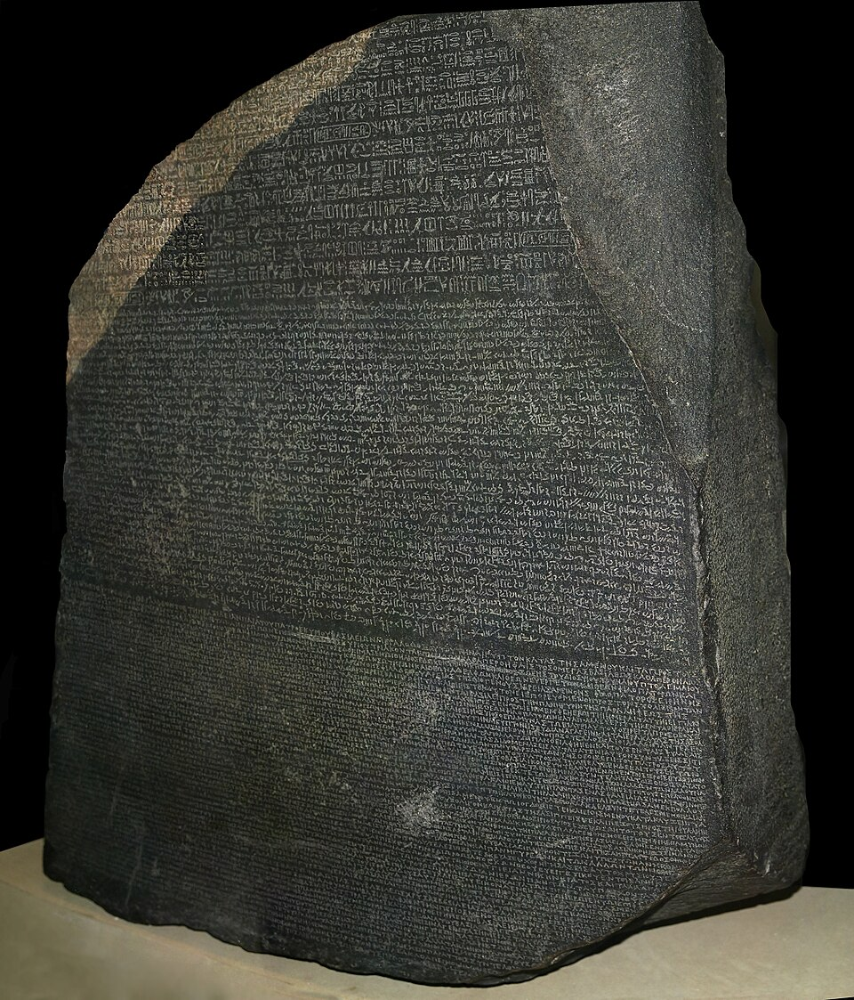

Un sabio de treinta y un años devuelve la voz a Egipto: los jeroglíficos han sido leídos
Jean-François Champollion expuso ante la Academia de Inscripciones su método para leer la escritura sagrada de los faraones, apoyado en la piedra de Rosetta y sus tres escrituras. Egipto llevaba quince siglos mudo; sólo faltaba quien supiera escuchar.

En la sala de sesiones del Instituto, ante los académicos de Inscripciones y Bellas Letras y un público de eruditos de varias naciones, el señor Jean-François Champollion leyó esta tarde una carta dirigida al secretario perpetuo, el señor Dacier, en la que expone nada menos que esto: que ha hallado la clave de los jeroglíficos de Egipto, cerrados a todo entendimiento desde los tiempos del Imperio romano. Quiso el azar que entre los oyentes estuviera, de paso por París, el doctor Young, el inglés que más lejos había llegado antes en el mismo empeño, y que escuchó cortésmente cómo otro cruzaba la puerta que él dejó entornada. La lectura fue serena; lo leído, un terremoto.
La llave tiene nombre de aldea: Rosetta. Allí, cavando fortificaciones hace veintitrés años, los soldados de la expedición francesa a Egipto desenterraron una losa negra con un mismo decreto grabado tres veces: en jeroglíficos, en la escritura corriente del país antiguo y en griego, que cualquier helenista lee de corrido. La piedra pasó a manos inglesas por capitulación de guerra y se guarda hoy en Londres, pero sus copias corren desde entonces por los gabinetes de Europa, tentando y derrotando a los sabios. Se sabía qué decía el texto; nadie sabía cómo lo decían los signos: si eran ideas puras, letras como las nuestras, o enigmas de sacerdotes sin regla alguna.
El hallazgo de Champollion es haber probado que son varias cosas a la vez: hay signos que pintan la cosa, signos que la simbolizan y signos que suenan como letras, mezclados en un mismo renglón con perfecta naturalidad. Empezó por los nombres reales encerrados en anillos que llaman cartuchos: Ptolomeo en la piedra, Cleopatra en un obelisco llevado a Inglaterra, y las letras comunes a ambos nombres fueron cayendo como fichas de un juego. Después, sobre copias llegadas de los templos de Nubia, leyó nombres que ningún griego dictó jamás, Ramsés, Tutmosis, y supo entonces que su clave valía para todo Egipto y toda su historia, no sólo para los reyes venidos de afuera.
El hombre está a la medida del hallazgo: hijo de un librero del Delfinado, devoraba lenguas desde niño, y entre ellas el copto, que es el egipcio que sobrevive en las iglesias de aquel país y que le dio el sonido de la lengua muerta. Cuentan sus íntimos que hace dos semanas, seguro al fin de su clave, cruzó la calle corriendo hasta el gabinete de su hermano en el Instituto, arrojó los papeles sobre la mesa gritando «¡Je tiens l'affaire!», que es decir que tenía el asunto en la mano, y cayó desvanecido; habría pasado días en cama, quebrado por el esfuerzo, antes de redactar la carta leída hoy.
Lo que se abre no se deja medir sin vértigo: los templos y las tumbas del Nilo, cubiertos de escritura de arriba abajo, dejan de ser decoración para volver a ser archivo, y cuarenta siglos de reyes, pleitos, plegarias e historias aguardan lector. El doctor Young y sus compatriotas reclamarán, no sin algunas razones, su parte en los primeros pasos, y la disputa de prioridades promete tinta abundante. Quede para los años venideros el inventario de cuanto Egipto tenga que decir; este diario anota lo esencial: que una civilización entera estuvo muda quince siglos por falta de una llave, y que la llave era una piedra rota con el mismo texto escrito tres veces.